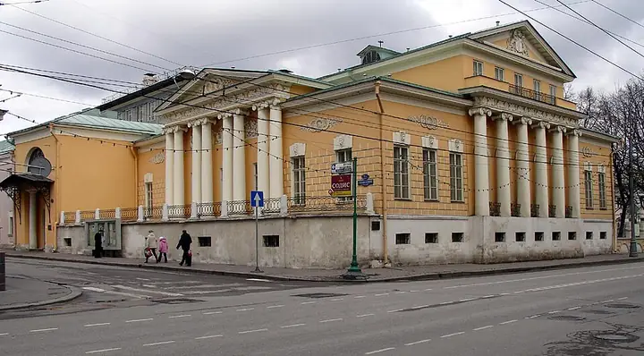

Подборку собрали 20 октября, прошедшие события скрыты. Свежая афиша — на главной

Фото: NVO, CC BY-SA 2.5 · Wikimedia Commons
Музей · ЦАО
Государственный музей Пушкина
Главный пушкинский музей в усадьбе Хрущёвых на Пречистенке.
- ₽ · до 1 500 ₽ на человека
- в 2 планах
- 3 события в афише
Позвать сюда: Государственный музей ПушкинаОткрыть в каталоге: Государственный музей ПушкинаМаршрут до места: Государственный музей Пушкина
Адрес и детали
- Адрес
- ул. Пречистенка, 12/2
Открыть на Яндекс Картах (в новой вкладке) - Метро
- м. Кропоткинская
- Округ
- Центр (ЦАО)
- Цена
- до 1 500 ₽ на человека
- Часы работы
- вт, ср 10:00–18:00; чт 13:00–21:00; пт–вс 10:00–18:00 · проверили в октябре 2026
- Телефон
- +7 (495) 637-56-74
- Проверено
- работает — проверили в октябре 2026
Планы с этим местом 2
- Государственный музей Пушкина · Музей · м. Кропоткинская
- 5 минут пешкомАйна · Кухня народов России
Пушкинский музей на Пречистенке и обед в «Айне», где готовят кухни народов России.
Открыть план: Пушкин и кухни народов РоссииПозвать сюда: Пушкин и кухни народов России
Фото: NVO, CC BY-SA 2.5 · Wikimedia Commons
- Государственный музей Пушкина · Музей · м. Кропоткинская
- 1 минута пешкомВоронеж · Мясной ресторан
Сначала Пушкинский музей в усадьбе Хрущёвых, а к ужину — стейки и дичь в мясном «Воронеже» в минуте ходьбы на той же Пречистенке.
Открыть план: Пушкин и стейкПозвать сюда: Пушкин и стейк
Фото: NVO, CC BY-SA 2.5 · Wikimedia Commons

Афиша площадки 3
Государственный музей А. С. Пушкина · м. Кропоткинская · 2 400–3 000 ₽ · 12+
Показывают «Огни большого города» Чаплина, а органистка играет вживую, как в первых кинотеатрах. Трогательный формат для будничного свидания.
Подробнее: Немое кино с органом: Чаплин, «Огни большого города»Позвать сюда: Немое кино с органом: Чаплин, «Огни большого города»Билеты : Немое кино с органом: Чаплин, «Огни большого города» (страница с билетами, откроется в новой вкладке)
Фото: NVO, CC BY-SA 2.5 · Wikimedia Commons
Государственный музей А. С. Пушкина · м. Кропоткинская · 2 400–3 000 ₽ · 12+
Мелодии из «Иронии судьбы» и «Семнадцати мгновений весны» в аранжировке для органа, саксофона и фортепиано. Свечи и старинная усадьба на Пречистенке.
Подробнее: Звуки и свечи. Музыка Микаэла ТаривердиеваПозвать сюда: Звуки и свечи. Музыка Микаэла ТаривердиеваБилеты : Звуки и свечи. Музыка Микаэла Таривердиева (страница с билетами, откроется в новой вкладке)
Фото: NVO, CC BY-SA 2.5 · Wikimedia Commons
Государственный музей А. С. Пушкина · м. Кропоткинская · 2 400–3 000 ₽ · 6+
Темы Джо Хисаиси из «Тоторо» и «Ходячего замка» на органе, а рядом художница рисует песком. Тёплый воскресный концерт для всех, кто вырос на Гибли.
Подробнее: Органный мир аниме. Вселенная Хаяо МиядзакиПозвать сюда: Органный мир аниме. Вселенная Хаяо МиядзакиБилеты : Органный мир аниме. Вселенная Хаяо Миядзаки (страница с билетами, откроется в новой вкладке)
Фото: NVO, CC BY-SA 2.5 · Wikimedia Commons
Похожие рядом


Что ещё рядом
Как позвать
- Выбери план, место или событие — в карточке адрес, цены и маршрут в Яндекс Картах.
- Нажми «Позвать сюда» — соберётся приглашение-игра для свидания или голосование для компании.
- Отправь ссылку в любой мессенджер: тебе ответят, а компания отметит, куда и когда может. Бесплатно и без регистрации.